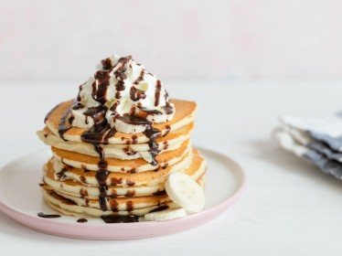

Pancakes

Pancake (or hot-cake, griddlecake, or flapjack) is a flat cake, often thin and round, prepared from a starch-based batter that may contain eggs, milk and butter and cooked on a hot surface such as a griddle or frying pan, often frying with oil or butter.
It is a type of batter bread. Archaeological evidence suggests that pancakes were probably eaten in prehistoric societies.
Ingredients
-
All-purpose flour
-
Baking powder
-
White sugar
-
Milk
-
Butter
Steps
-
In a large bowl, sift together the flour, baking powder, salt and sugar.
-
Make a well in the center and pour in the milk, egg and melted butter; mix until smooth.
-
Heat a lightly oiled griddle or frying pan over medium-high heat.
-
Pour or scoop the batter onto the griddle, using approximately 1/4 cup for each pancake.
-
Brown on both sides and serve hot.